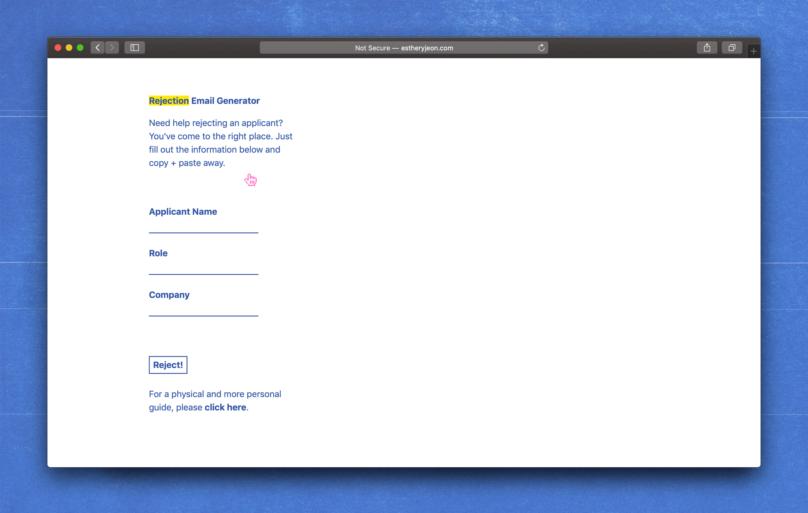
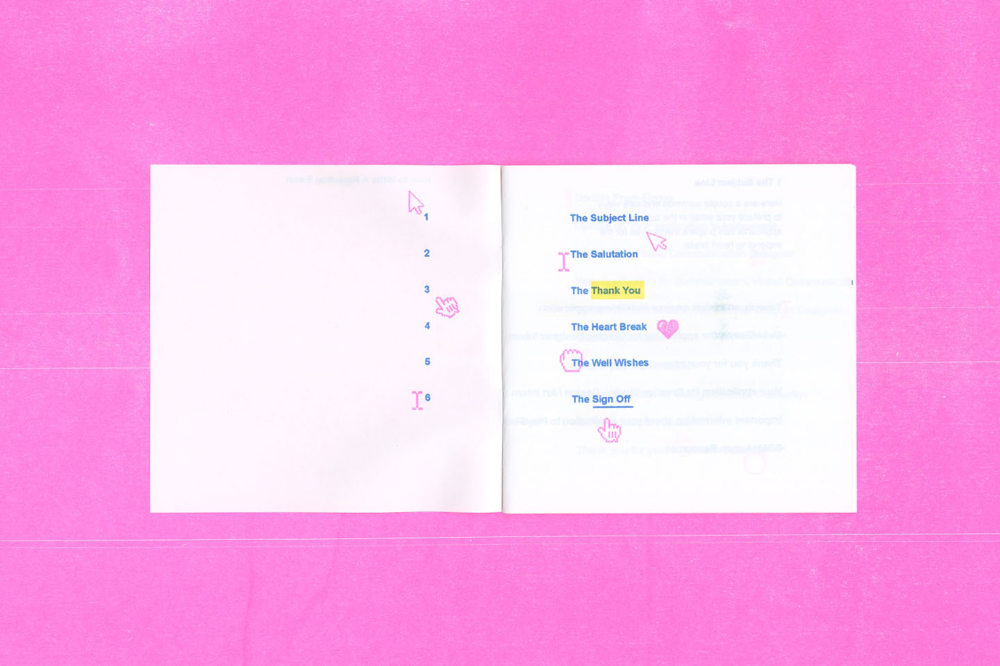
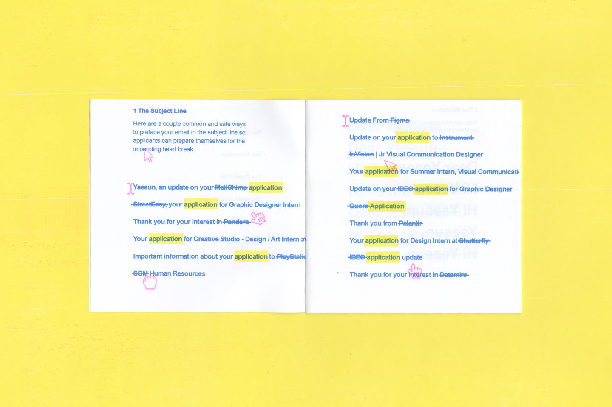
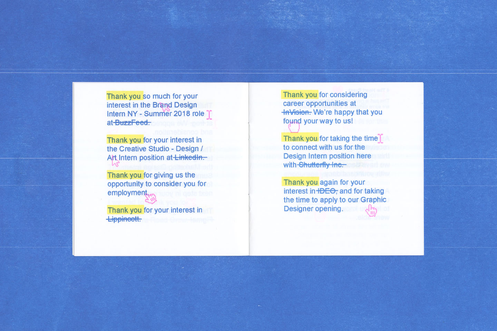
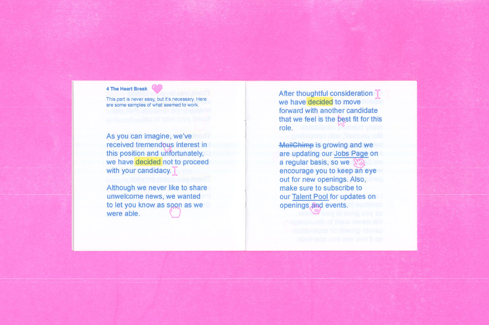
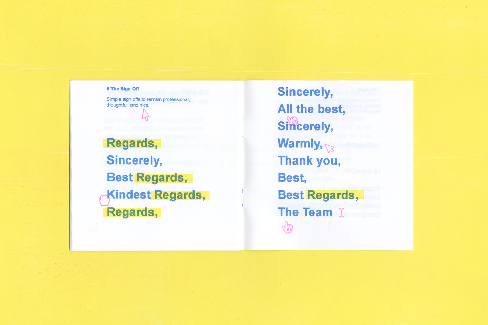

After getting countless rejections in the past 4 years in college, I decided to make a zine about how to write one as a coping mechanism and as a way to move past them and keep persevering! I wanted to make this rather dehumanizing job process become more fun and light-hearted. If you would like to see the full digital version or receive a physical copy, please email me. Along with this risograph zine, I created a rejection email generator where all your rejection dreams come true!





